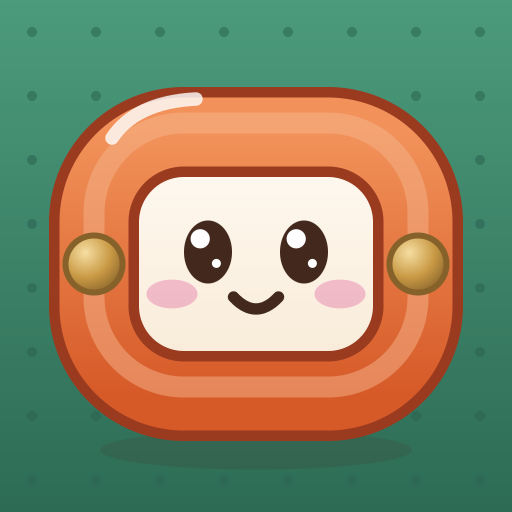
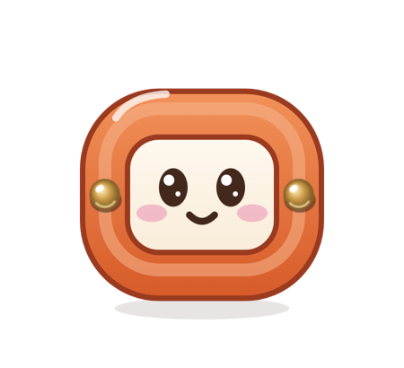
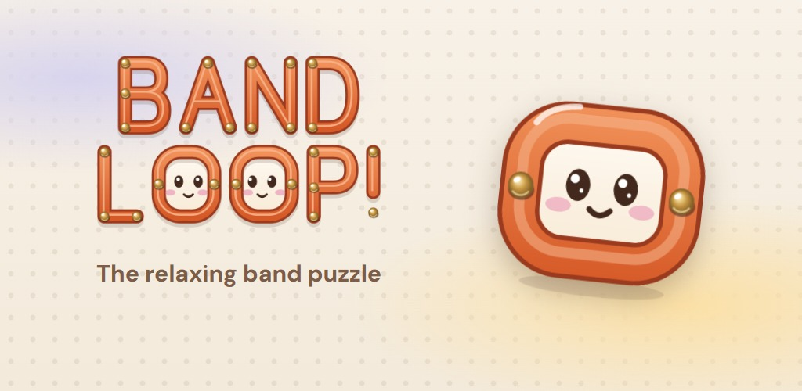

Press kit
Everything you need to write about or film Band Loop!. All images on this page may be used in coverage. Need something else? info@nailballgoal.com
Fact sheet
| Game | Band Loop! |
|---|---|
| Developer | Fuat Furkan Kahraman (solo developer) |
| Release | App Store: 11 November 2026 · Google Play: 13 November 2026 |
| Platforms | iOS / iPadOS, Android |
| Price | Free, with optional ads and in-app purchases (one-time ad-free purchase available) |
| Genre | Relaxing puzzle |
| Languages | English, Turkish, Spanish, Portuguese (Brazil), French, German, Russian, Japanese, Korean |
| Trailer | YouTube (36 s, vertical) |
| Links | Google Play · App Store · Website |
| Contact | info@nailballgoal.com |
Description
Band Loop! is a calm, cozy puzzle game. Stretch a rubber band over the pegs, loop every button of one color and feel it snap into place. If a wrong color ends up inside, the band is wasted; stretch it too far and it snaps. Each level asks for a little planning, never for speed.
Players are greeted by Loopidy, a friendly rubber-band mascot who opens the right mode for their mood and breathes with them for a minute whenever they want a short break.
Features
- 240 levels in 24 chapters with missing pegs, blockers, wild buttons, locks, ice, chains, bombs and mirror boards. Every level's solution is verified by the game's own rules engine.
- Zen mode: no timer, no score, no losing.
- A new daily puzzle, time attack, 12 achievements and 2 leaderboards (Google Play Games / Game Center).
- Color-blind friendly: every color has its own shape (circle, triangle, square, star, plus, heart), shown on the buttons and on the band while you draw it.
- Make it yours: 8 themes and 11 band styles.
- Plays offline, with optional cloud save.
- Fair ads: no ads at all in the first 15 levels and no ad when the app opens; rewarded ads are always optional.
Screenshots
1080 × 1920. Click for the full-size file.


Logo and art



App icon (512 × 512)

Loopidy, the mascot

Banner (1024 × 500)About the developer
Band Loop! is made by Fuat Furkan Kahraman, an independent solo developer. The game is designed to be a calm break in a busy day: short levels, no pressure, and accessibility built in from the start.